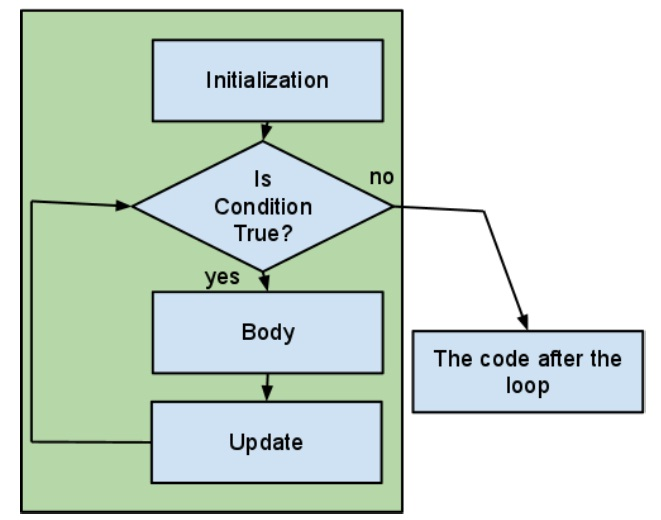
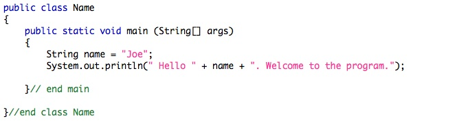
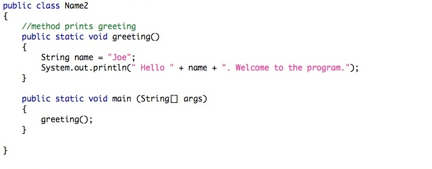
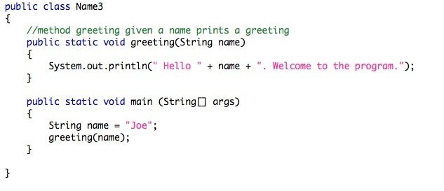
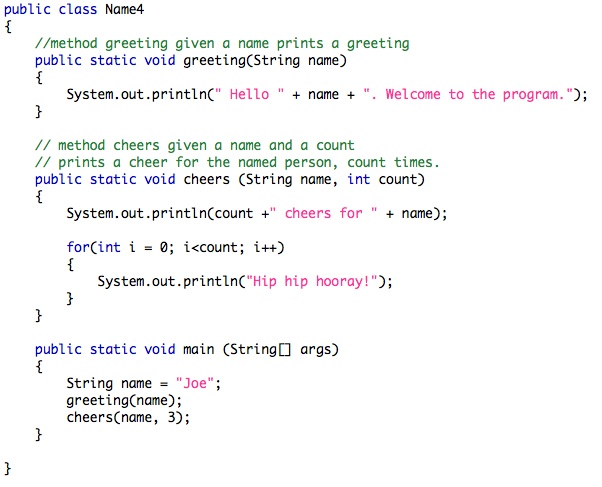
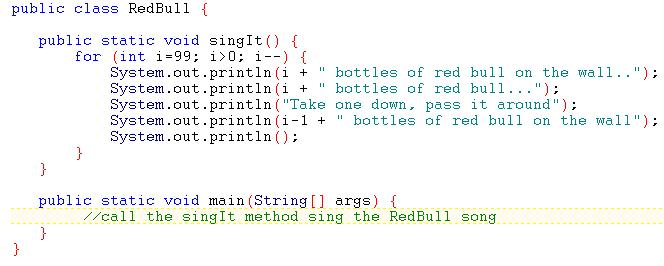

First, a review of the last exercise from lab 2 and For-Loops
See this page for the program and answers to the questions from last lab.
And For-Loops, what's going on:

In these 2 hours of lab you will be practicing with methods and loops.
Methods:
New programmers must learn to imagine that a method exists before they code it and to see it's place in a larger program. This ability comes with practice. Most of you would already know what the methods referred to in 2 and 3 above must do.
- They are sub programs that separate some of the actions that a program performs. You can recognize the call by the presence of brackets.
System.out.println() is a call to a method.
- Much of the time a method is given one or more values from the program that calls it. These are called paramenters. Parameters are copied and the copies are employed in some way by the subprogram.
printTransaction(amount, kind, date, balance);
- Often we want a method to return some value. In its simplest form the value is the result of some calculation that we may make many times in the calling program and don't wish to repeat the code over and over. The returned value is usually captured as part of a larger expression or as part of a simple assignment.
double area = computeArea(dim1, dim2)
double volume = compVol(dim3, area);
Learn to quickly write a correct method header (first line).
A correct header for the method referenced by 2 above is given. Look at it then do the same for the methods referenced in 3 above:
public static void printTransaction(double amount, String transaction, String dateStr, double bal)
To be correct printTransaction must be called with 4 parameters a double, a String, a String, and a double, no different order or different number parameters will match this signature.
Note: Since the parameters are copied for use in the method the names can be the same or they can be different. When a new programmer learns to recognize the need for a sub program, 'a cog' in a solution and writes the sub program first, the names are likely to be different. When the subprogram is written just as it is needed the parameter names are likely to be the same. In this example the mapping of the parameters from the caller to the method is:
- amount -> amount
- kind -> transaction
- date -> dateStr
- balance -> bal
Practice, practice, practice.
Your TA may ask you to just share the experience with someone beside you if we can't quickly fix the errors that result. You can always come back and do the demo and more experiments on your own.
Example 1:
Type in:

Compile and run the program.
Example 2:
Add a simple method to print the name: See what happens when the String name is defined in the main instead of the method. Note the error. Is the error a compile time or run time error? Are there work-arounds? What is the best solution?

Compile and run the program
Example 3:
Add a parameter to your simple method. What is the benefit of doing this. Generate a compile-time error by moving the declaration of name from the main to the method.

Compile and run the program
Example 4:
Add a second method with two parameters.

Compile and run the program
Exercise 1
Download this program and fill in the main method.
Exercise 2
Type in the following program and fill in the main method.

Continuing with this exercise...
- Fix the grammar errors that occur in the output of the song.
HINT: what is output when one bottle or no bottles are left?- Add a parameter to vary the number of bottles that start on the wall.
Exercise 3
Download this program and compile and run it.
Try adding a return value to the calcDuration method and move the print statement into to the main method.
Exercise 4: Review
Download this program and compile and run it.
Answer the questions in the comment after the program.
The End